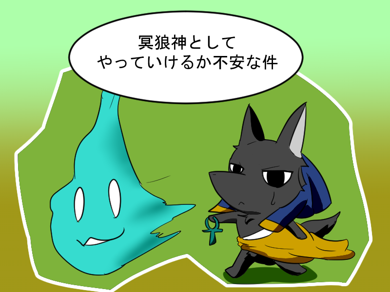

AoNekoGames(仮)
今まで作成したゲームを公開していきます。



・冥狼神をやっていけるか不安な件(2017/2/2)
【内容】
アヌビスを操作して逃げるタマシイを時間内にすべて捕獲するゲーム。
結構タマシイが素早いのが反省点。
【遊び方】
アヌビスを操作して、制限時間内に逃げるタマシイを全て捕まえてください。
ステージ上にいるタマシイを全て捕まえるとステージクリアです。
全部で3ステージあり、全てのステージをクリアするとゲームクリアとなります。
ゲームの最中に時間切れとなった場合はゲームオーバーとなります。
制限時間は全てのステージにおいて90秒固定です。
【操作方法】
・移動
方向キーまたはWASDキー(W=上，A=左，S=下，D=右)
【開発期間】
・3週間
【開発環境】
・Atom
【使用言語】
・JavaScript
・HTML5
・CSS
【動作環境】
GoogleChrome(PC版)のみ確認
【その他】
使用しているBGMはタイトル画面のものを除いてフリーBGMを使用しています。
(c) 2017 TuKeRu